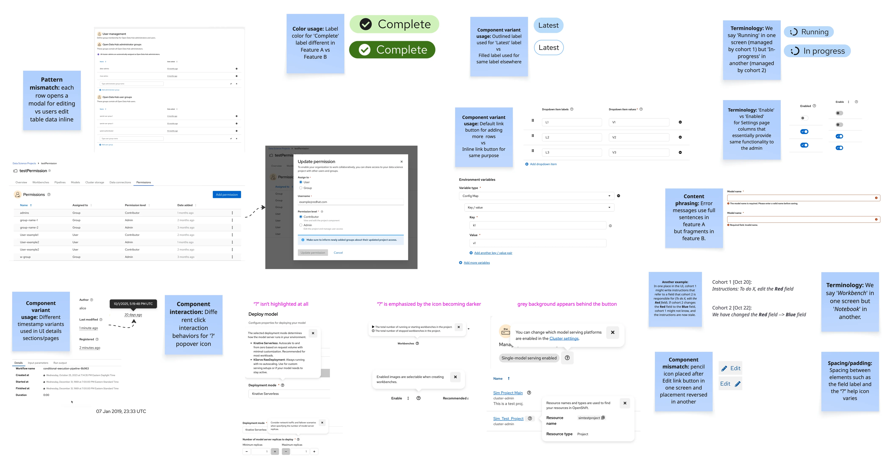
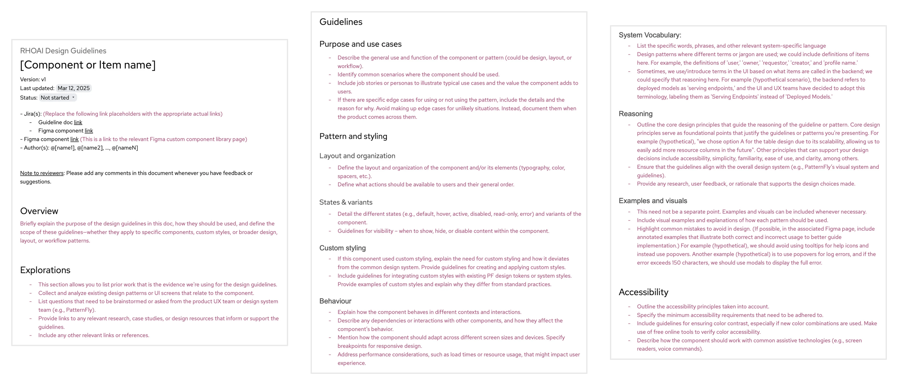
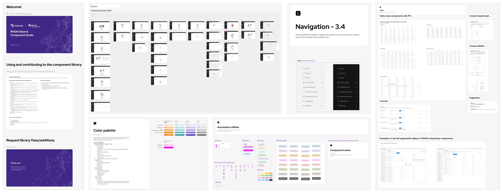
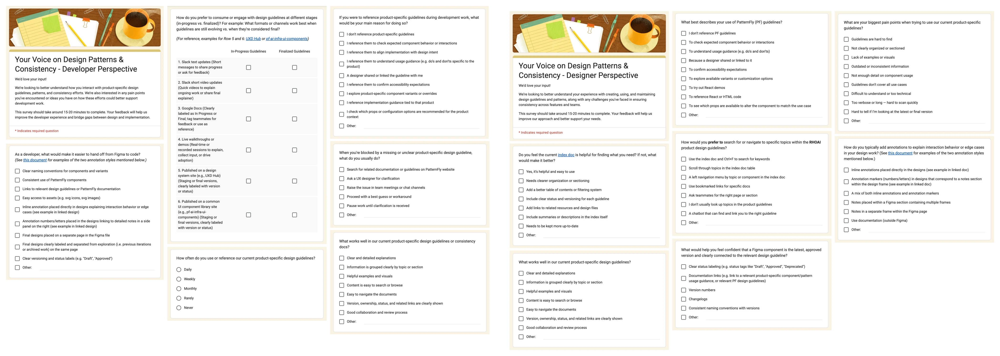
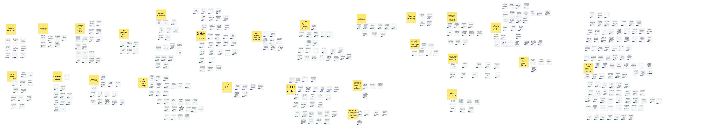
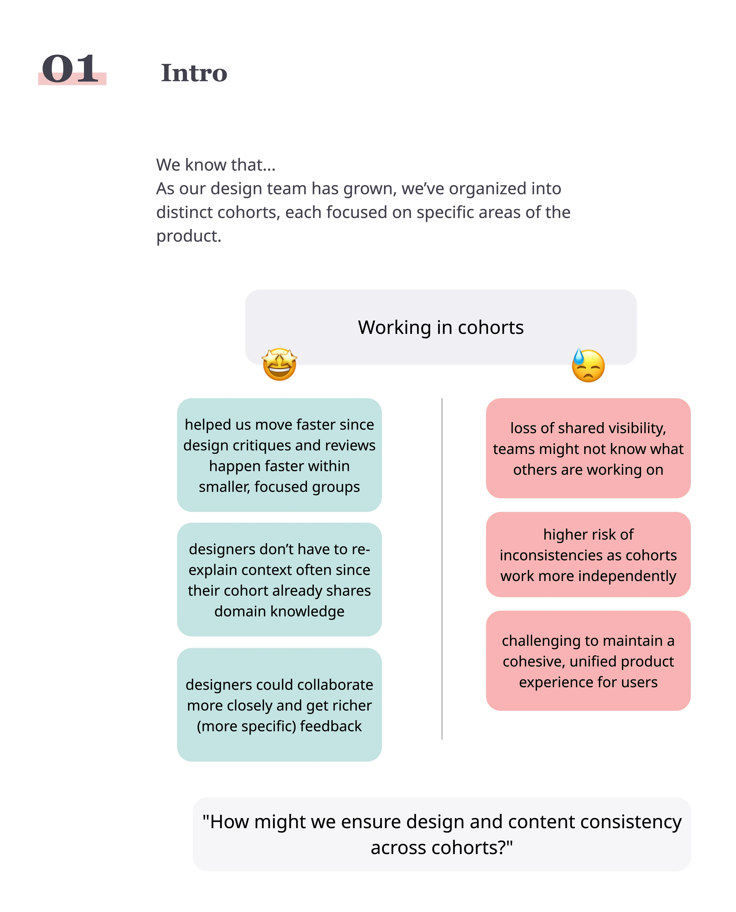
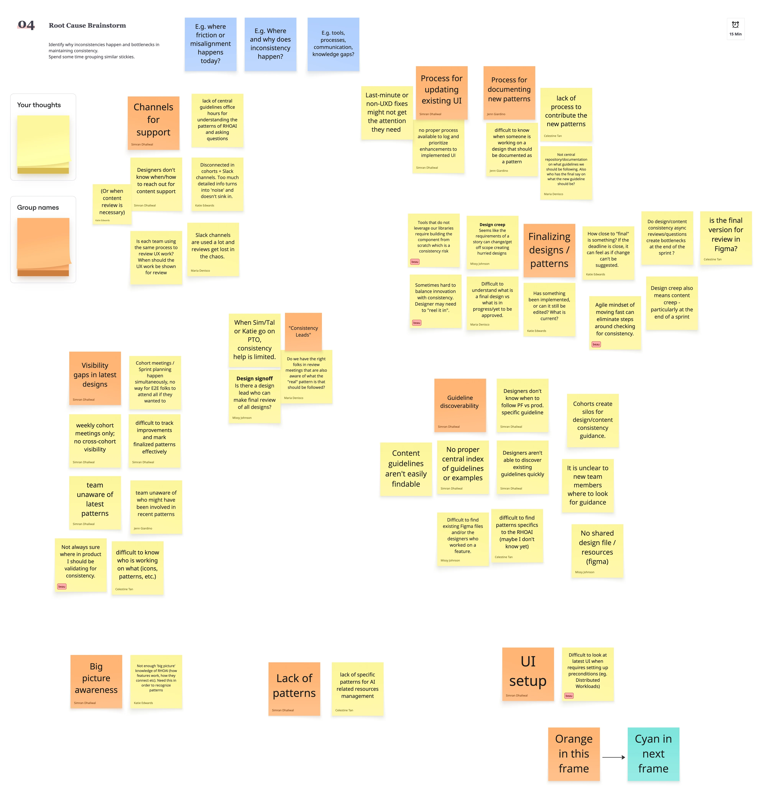
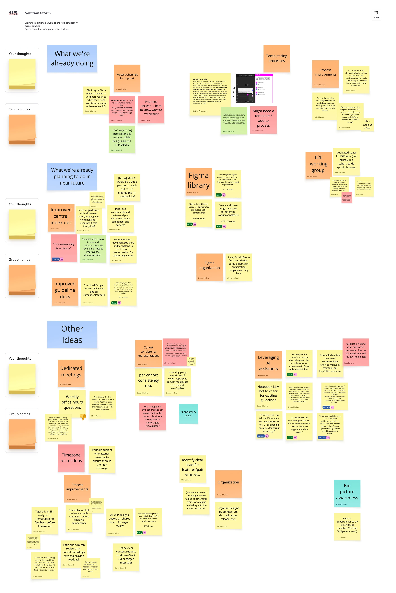
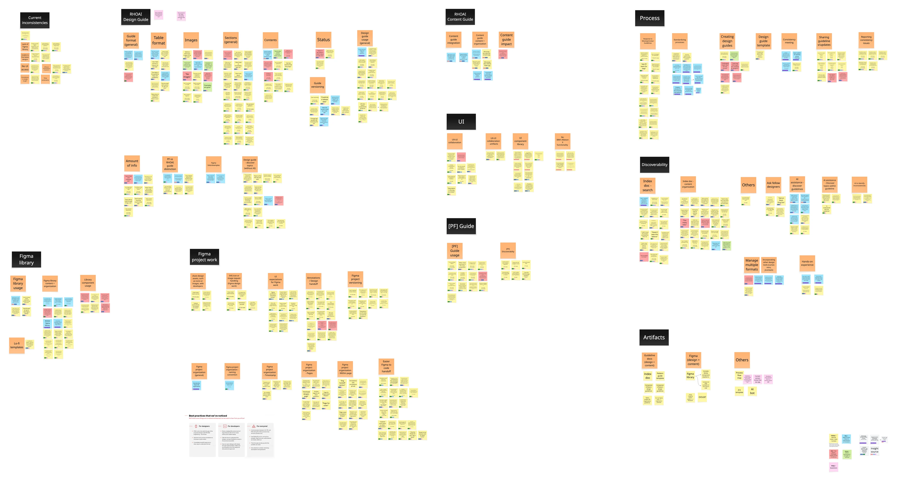
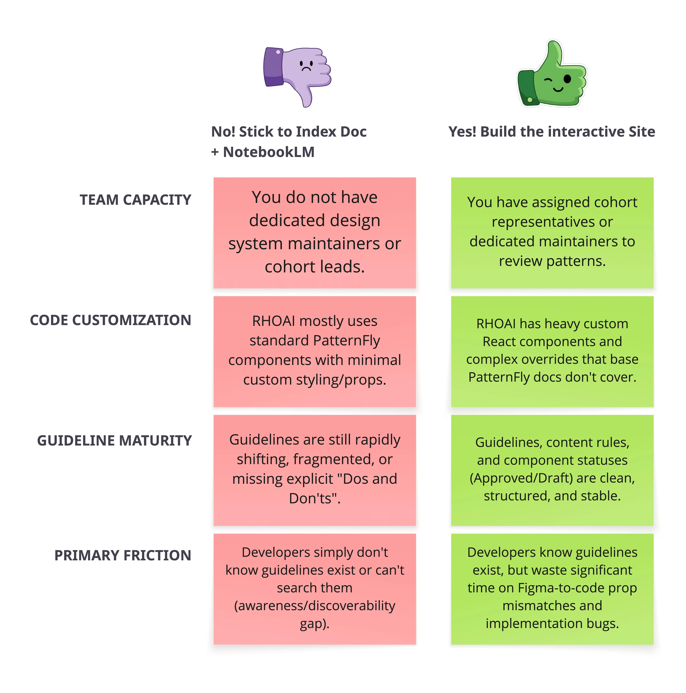

Designing for consistency at scale
I led a design consistency initiative across a 20-designer team, helping break down feature-area silos by making shared patterns and guidance easier to discover, understand, and reuse, so connected experiences could feel seamless across the product.
- My role
- UX Design Lead, Design Consistency Initiative
- Team
- Led 2 to 3 designers across different phases, collaborating with designers, 8 engineers, 1 researcher, 1 content designer, and 3 product-area leads
- Timeline
- 6 months
- Product
- Red Hat OpenShift AI
- Tools used
- Figma, Miro, Google Docs, Google Forms, NotebookLM, Cursor
The challenge
As our team grew from around 10 to 20 designers working across different product areas, design decisions became harder to share and track. Existing patterns weren't always easy to discover, teams sometimes approached similar problems differently, and inconsistencies could go unnoticed until reviews or implementation.
My contribution
I initiated and led the design consistency effort, established a framework for documenting product-specific patterns, conducted research with designers and developers, and facilitated alignment across teams. I also led a consistency working group, coordinated improvements to shared design resources, and explored AI-assisted ways to make guidance easier to access and apply.
What we introduced
A reusable guideline template, shared pattern documentation, a centralized and searchable guideline index, and cross-team consistency review practices. I also developed an AI-assisted guideline search prototype and explored more interactive approaches to design documentation and consistency checking.
Confidentiality note
Some details are omitted or generalized. This account describes my contribution; the analysis and opinions are my own.


Our usual ways of staying consistent weren't keeping up
Red Hat OpenShift AI (RHOAI) is a platform that helps organizations build, train, deploy, and manage AI and machine learning models. As the product expanded, our UX team grew to around 10 designers working on different areas of the platform. We held weekly, hour-long UX meetings where designers walked through their work, discussed interaction decisions, and gave one another feedback.
These meetings were valuable because inconsistencies were often easier to catch during a walkthrough. Someone working on a similar use case might recognize the problem and share an existing solution, or another designer might point out a product-specific pattern that should be reused. But as more features were being designed, we had more topics than we could cover in an hour. Reviews were postponed, discussed in smaller ad hoc meetings, or shared asynchronously through Slack.
Async reviews helped keep work moving, but they came with limitations. Designers had to prepare enough context and annotations for others to understand their thinking without being present. That took additional time, especially when they needed feedback quickly. Even then, the conversation could miss useful connections to work happening elsewhere in the product.
We had shared patterns, but the knowledge wasn't shared consistently
Our products used PatternFly, Red Hat's open-source design system. While it provided a strong foundation, it didn't cover every use case we encountered in OpenShift AI. Sometimes we needed to adapt existing components or introduce product-specific patterns.
Designers who created these patterns often documented their decisions in Google Docs or with annotations in Figma. During design reviews, they would explain why they'd chosen a particular approach, how the interaction should behave, and what alternatives they'd considered. The team appreciated this information, but it wasn't always easy to find later.
A designer working on another feature might not know that a similar problem had already been solved. Without a common reference, they could spend time exploring something the team had already worked through or arrive at a different solution for essentially the same interaction. For users moving between areas of the platform, those differences could make the product feel less cohesive. We wanted to find a way to preserve the thinking behind these patterns and make it easier for others to build on that work.
Inconsistent UI patterns developing across different product areas


EnlargeThe first step toward a more consistent experience
Reusing patterns across teams
I was asked to take ownership of improving design consistency and was given room to explore possible solutions. Rather than introducing a completely new process, I started by looking at what was already working. Some designers were voluntarily documenting their patterns, and those documents were useful whenever they were shared during reviews.
My initial proposal was to turn that individual effort into a shared resource for the product. I suggested creating a collection of design guidelines alongside a Figma library containing reusable, product-specific patterns. The guidelines would explain when and why to use each pattern, while the Figma components would make it easier to apply those decisions in new designs. I discussed the idea during a meeting with the other product-area leads. They supported the direction, so I began identifying patterns that would be useful to document first.
The approach was intended to address three practical problems:
- Reduce repeated design decisions. Give designers an existing reference when they encounter a familiar use case, rather than asking them to start from scratch.
- Improve consistency across features. Make it easier to follow agreed patterns even when designers aren't working on the same feature team.
- Make implementation guidance reusable. Let designers share a guideline with developers instead of repeatedly explaining the same component behavior through separate annotations.
Creating a guideline template people could actually use
I created a Google Docs template to give the guidelines a consistent structure. I wanted the documents to be easy to scan without losing the details that made them useful. A screenshot of the final component wouldn't be enough; someone reading the guideline should understand the use case, the reasoning behind the design, and how the pattern should behave.
The template covered design rationale, use cases, rejected alternatives, layout and organization, interaction behavior, states, variations, and accessibility considerations. Before asking everyone to follow the template, I approached two designers who had recently created new patterns and asked them to document their work using it. This gave me a chance to see whether the structure made sense when applied to real examples. Both designers completed the guidelines and shared feedback about where the template needed more explanation.
One important suggestion was to clarify what kind of information belonged in each section. I added descriptions and additional context to make the template easier to complete. I then shared the updated template and sample guidelines with the broader team, which led to two further improvements: a last-updated date and a change log. We already had a document status field, but that alone didn't communicate when guidance had changed or what had been revised.
With those changes incorporated, we had our first usable guideline template. Other designers began using it to document additional patterns.
Guideline template, version 1


EnlargeI also started organizing product-specific patterns in a shared Figma library so they could eventually be published and reused across the team.
Figma library, version 1


EnlargeFinding time to contribute
As I shared progress during our weekly UX meetings, several designers raised a practical concern. They were already balancing feature work, design reviews, and release deadlines. Writing a detailed guideline after creating a new pattern meant adding another task to an already busy schedule. That feedback made me reconsider how we expected people to contribute. If maintaining the guidelines required every designer to write a complete document independently, the process could become difficult to sustain as the team grew.
I proposed having a smaller group take on more of the documentation work. Designers creating new patterns would provide the essential information, including their reasoning and important interaction details, while we would help organize and format it into the guideline template. The original designer could then review the completed document for accuracy.
I discussed this approach with my manager and brought another designer into the initiative. Together, we began creating guidelines for additional high-priority patterns. This reduced the amount of work required from individual contributors while keeping the documentation connected to the decisions made by the people who designed the patterns.
We also started sharing guidelines with engineering teams. The response was generally positive, although feedback about readability and document structure showed that the resources would need continued refinement.
The problem grew with the team
From 10 designers to 20, and four increasingly separate teams
While we were developing the guidelines, OpenShift AI was preparing for a major release with several new capabilities. Our design team grew rapidly, adding roughly 10 more designers and bringing the total to around 20. To make the larger organization more manageable, we reorganized into four smaller groups, called cohorts, each responsible for a major product area containing several features. This helped designers collaborate more closely with people working in their area, but it also meant that design decisions increasingly happened within separate teams.
The original weekly UX review was no longer the main place for everyone to discuss work together. Each cohort held its own reviews, while opportunities for broader feedback happened asynchronously or during less frequent whole-team meetings. The guidelines we'd started creating were useful, but they couldn't solve every problem on their own. Designers still needed to know what guidance existed, which decisions were being made in other cohorts, and when a new pattern might affect the broader product. The challenge had grown beyond documenting components. We needed a better way to maintain consistency across teams that were becoming more independent.
Expanding the initiative into a more structured effort
I raised this during our team-lead discussions and proposed a broader framework that would bring together design guidelines, shared Figma patterns, and consistency review practices. Instead of treating these as separate improvements, I wanted to understand how they could support one another and make consistent design decisions easier across RHOAI.
I outlined an initial plan across three sprints, each three weeks long. The work would cover discovery, strategy, modeling possible solutions, and beginning to introduce a more scalable approach. But I didn't want to assume that the solutions we'd already started were necessarily the ones the team needed most. We had heard individual complaints about guidelines, design reviews, and handoffs, but we hadn't systematically investigated the experience of the designers and developers expected to use these resources. I decided to begin with research.
Discovery
Understanding designer and developer needs
I wanted to understand how designers and developers experienced consistency issues, what they expected from shared guidelines, and where existing workflows were causing friction. I started by creating separate surveys using Google Forms, one for designers and another for developers.
The surveys covered design consistency, product-specific patterns, collaboration, documentation, and handoff practices. I also wanted to conduct one-on-one interviews because surveys alone wouldn't give me enough insight into why people struggled with particular tasks. Open-ended survey responses can be limited, especially when someone is filling out a form between other responsibilities. I included a question inviting participants to take part in a longer conversation. Once I had a draft, I asked a UX researcher to review the questions. Their feedback helped me improve the wording and make sure the questions would give us useful responses.
Some examples from the survey


EnlargeThe research included:
- 20 survey responses: 12 designers and 8 developers.
- 11 one-on-one interviews: 8 designers and 3 developers.
- A workshop with product-area leads: Focused on the causes of inconsistency across cohorts and opportunities to improve collaboration.
For the interviews, I created separate discussion guides for designers and developers, again reviewing them with a UX researcher. I used open-ended questions to explore their experiences with existing design patterns, areas of misalignment, and what they would change about the current process.
After conducting the interviews, I analyzed the responses alongside the survey findings to identify recurring themes, common frustrations, and opportunities. I wanted the next phase of the initiative to be grounded in what the team had actually experienced, rather than what we assumed would help.
Affinity mapping of survey findings and interviews


EnlargeBringing the problem back to the team leads
I also facilitated a workshop with the product-area leads around a question that had become increasingly important as the team reorganized:
How might we ensure design and content consistency across cohorts?
I opened the session by explaining how the cohort structure had helped teams focus on their product areas, but also created new challenges for maintaining consistency. I shared examples of inconsistencies from our product, along with findings from the surveys and interviews, to give everyone a common starting point.
Miro board: intro diagram


EnlargeBrainstorming


EnlargeSolution storm


EnlargeWe then worked through two rounds of brainstorming. First, we explored the root causes behind inconsistencies, including how work was reviewed, how knowledge was shared, and where teams lacked clear guidance. Then we discussed how to make staying consistent easier and more natural in everyday work.
After the workshop, I combined its findings with the survey and interview results. This helped me move from a collection of individual complaints and suggestions toward a clearer set of priorities for the initiative.
What the research revealed
We didn't just need more guidelines. We needed to make them usable.
Four themes emerged from the research and workshop. Some confirmed problems we'd already suspected, while others showed that our documentation and review processes needed more attention than we'd initially given them.
Research synthesis: themes and opportunities


Enlarge1. People struggled to find guidance that already existed
The guidelines were in a Google Drive folder, and our existing index document depended on people knowing which document or topic to look for. Designers and developers often struggled to find the latest approved pattern, particularly when they were trying to move quickly.
Two findings stood out:
- 75% of surveyed UI developers were unaware that RHOAI-specific guidelines existed.
- 100% of survey respondents agreed on the need for a centralized, searchable index.
This changed how I thought about the problem. We had started by creating more documentation, but even well-written guidelines couldn't help someone who didn't know they existed or couldn't find the right one.
The immediate opportunity was to improve discoverability, using clearer organization, searchable keywords, visible status information, and eventually more flexible ways of querying the documentation.
2. Figma and implementation weren't always aligned
Designers and developers described situations where Figma components didn't match production constraints or PatternFly capabilities. Handoffs could also become confusing when designs lacked annotations or didn't clearly separate exploratory work from final specifications.
Both groups expressed a need for more reliable product-specific Figma components and clearer connections between designs and implementation guidance. Instead of manually recreating common variations or repeatedly explaining their behavior, designers wanted reusable components they could trust.
This supported our work on the shared Figma library, but also pointed toward more consistent handoff practices. Guidelines needed to connect to relevant documentation, component properties, and implementation constraints rather than exist as isolated design references.
3. Content consistency was part of the same problem
The research and workshop also surfaced inconsistencies in terminology, labels, error messages, and other interface text across product areas. These differences could make related workflows feel disconnected even when they used similar visual patterns.
The team identified a need for a shared Content Guide covering voice, tone, capitalization, terminology, and product naming, along with a searchable database of approved microcopy.
We also discussed how those resources could eventually be connected to AI-assisted search, making it easier for designers and developers to find established wording rather than create new variations.
4. Time pressure and unclear ownership made inconsistencies more likely
Another recurring issue was the pressure to deliver features quickly. Under tight deadlines, finding existing guidelines or requesting a review could feel like extra work. If the current guidance was difficult to locate, people were more likely to make their own decisions and move forward.
There was also uncertainty about ownership. Who should review a new pattern? When should a consistency issue become a Jira task? Who was responsible for updating guidance, and how should changes reach designers in other cohorts?
The workshop helped identify opportunities for cohort representatives, standardized request workflows, and more regular consistency checks within existing sprint practices.
Taken together, these findings showed that a sustainable approach to consistency needed more than a library of approved components. It needed accessible guidance, clear ownership, and processes that worked within the team's actual constraints.


Exploring a design system website
Moving beyond static documentation
As Cursor became available as a work tool, I began experimenting with an interactive design system website inspired by experiences such as the PatternFly documentation site.
The guideline index helped people browse documentation, and NotebookLM offered a way to ask questions about it. But neither approach could fully demonstrate how a component behaved in a working interface.
For more complex interaction patterns, screenshots and written descriptions could leave important details open to interpretation. A live example could make behavior easier to understand, especially when someone needed to see different component states or variations.
I explored what a more integrated documentation experience might offer:
- Interactive component demonstrations: Users could change properties, inspect states, and see how a component behaved under different conditions.
- Visual browsing and discoverability: Pattern previews, tags, and direct links could help people find relevant guidance without knowing the exact component name.
- Contextual interaction examples: Loading, error, disabled, hover, and other states could be demonstrated alongside usage rules.
- Connected design resources: Figma components, design tokens, icons, implementation guidance, and approved microcopy could eventually live closer together.
- Version and status information: Clear warnings and change histories could help prevent people from using outdated patterns.
- Accessibility and implementation guidance: Component properties, keyboard interactions, and relevant accessibility requirements could be available alongside examples.
The most powerful solution wasn't necessarily the right investment
I began experimenting with a website using Cursor, while also creating a decision matrix to evaluate whether building and maintaining such a resource would be worthwhile.
Decision matrix


EnlargeThe possibilities were interesting, but the scope was much larger than the guideline index or AI search assistant. Even if Cursor helped create interactive examples quickly, those examples would only be as reliable as the guidance behind them. We'd still need structured documentation, clear usage rules, accessibility information, and explicit Approved, Draft, and Deprecated states. The Figma library would also need to stay aligned with the code examples as components evolved. There was a difference between building a convincing prototype and maintaining a dependable resource that designers and developers could use every day.
I discussed the potential benefits and maintenance requirements with the other team leads. We agreed that the team wasn't ready to make that investment without a stronger case for its value. We decided not to pursue the website at that stage. The exploration was still useful. It helped us understand what a more complete documentation experience could offer, while also making the ongoing maintenance responsibilities clearer.
Adapting consistency checks to AI-assisted design
Our design tools were changing, and consistency needed to keep up
As more designers began exploring AI-assisted workflows, our process was no longer limited to designing screens in Figma before development. Tools such as Cursor made it possible to generate working prototypes directly, which created new opportunities for faster experimentation. But they also introduced another consistency challenge. A functional interface generated with AI might look reasonable while using non-standard colors, outdated patterns, or components that didn't follow PatternFly or RHOAI guidelines.
Traditionally, we might catch those issues during a design review or handoff. But if designers were increasingly producing code-based prototypes themselves, it made sense to consider whether consistency checks could happen during that process. Our working group began exploring a new question: what if the guidelines could help identify problems while someone was building the design?
Exploring an automated consistency checker in Cursor
We discussed creating a custom Agent Skill in Cursor that could check generated UI code against relevant design system rules. Rather than replacing human reviews, the intention was to make routine inconsistencies easier to catch before they reached a later stage.
The concept focused on two potential benefits.
- Catch deviations earlier. The checker could flag hardcoded colors, non-standard styling, deprecated components, or other differences from established guidelines while the prototype was being developed. This could reduce the need to revisit those decisions later.
- Give the working group more time for complex problems. If automated checks could identify routine issues, reviewers could focus more on questions that needed design judgment, such as whether a pattern fit the use case or whether a new solution should become shared guidance.
I began experimenting with this approach, but was then assigned to another feature project that had higher priority for the upcoming release. I handed the consistency-checker exploration to a Principal UX Designer colleague, who continued investigating it. I wasn't involved through its later stages, so I wouldn't describe it as an implemented solution from my work. But it marked an important change in how we were thinking about consistency: instead of expecting people to continually check documentation, we were exploring ways to bring guidance directly into the tools they used to design.
From scattered design knowledge to a more connected approach
What started as an effort to document a few product-specific patterns became a broader initiative to improve how a 20-designer organization shared knowledge, reused solutions, and made decisions across product areas.
Over six months, my work helped establish several foundations for improving consistency:
- A repeatable way to document design patterns. I created and refined the guideline template, tested it with designers, and helped establish a contribution process that reduced the burden on individual pattern creators.
- A clearer place to find approved guidance. I developed a centralized, searchable index with organized categories, keywords, and status information.
- A way to coordinate decisions across cohorts. I led a consistency working group and helped establish the roles and workflows needed to bring shared design questions into review.
- Progress on reusable design resources. I delegated and coordinated improvements to the Figma library so product-specific patterns could be easier to reuse.
- New ways to access design knowledge. I explored a NotebookLM guideline assistant, an interactive documentation website, and a Cursor-based consistency checker, evaluating what was useful immediately and what required further investment.
The impact
I’ve noticed fewer questions about which pattern to choose, whether directed to me, raised in team meetings, or posted in our Slack group. Team members have been using the guidelines and have shared that they spend less time waiting for answers. Clear labeling helps them feel more confident choosing and using the guidance, and NotebookLM has also been helpful in answering their questions.
These observations and team feedback provide qualitative evidence of the changes, rather than a quantified measure of question volume or time saved.
The research provided concrete evidence of the challenges we needed to address. Across 20 survey responses, 11 interviews, and a workshop with product-area leads, we identified problems with guideline awareness, discoverability, implementation alignment, content consistency, and ownership.
The finding that 75% of surveyed developers didn't know the product-specific guidelines existed was particularly important. It showed why simply producing more documentation wouldn't be enough. Likewise, the unanimous agreement among survey respondents on the need for a searchable index helped justify making discoverability an immediate priority.
The guideline template, index, and working-group structure gave the team more organized ways to share design decisions and find existing solutions. The NotebookLM experiment also demonstrated a different way of accessing that information, while the later explorations helped us evaluate potential directions for more automated support.
Key takeaways
Making guidance discoverable matters as much as creating it.
We began by documenting patterns, but the research showed that awareness and discoverability were significant barriers. It made me think more carefully about how shared knowledge fits into someone's actual workflow, not just whether the documentation exists.
As teams grow, consistency can't depend on everyone being in the same meeting.
Our cohort structure helped designers focus, but it reduced the informal knowledge sharing that had worked when the team was smaller. The initiative showed why shared resources and clear review ownership become more important as teams work more independently.
New tools are useful when they solve a real workflow problem.
NotebookLM offered a more natural way to search guidance, while the interactive website introduced a much larger maintenance commitment. Exploring both helped me distinguish between what was interesting to build and what made sense for the team at that stage.